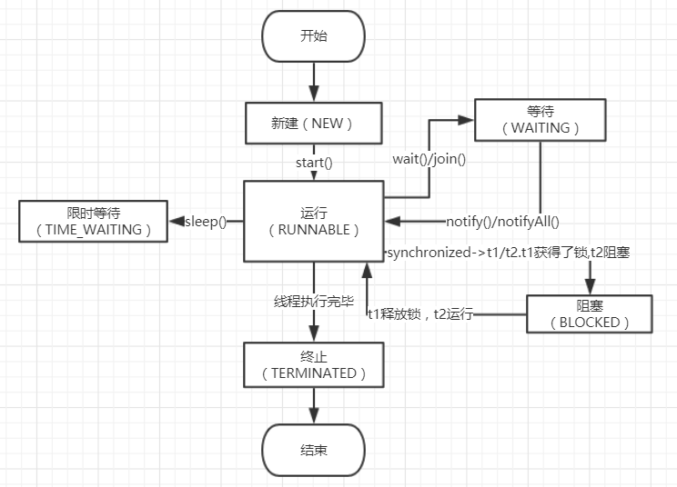
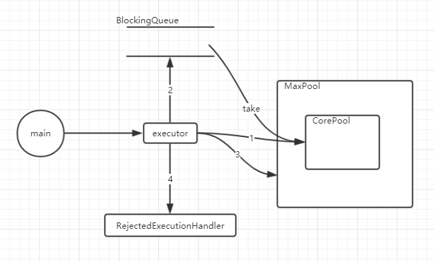

多线程
多线程
线程的6种状态
如何停止一个线程
方式一：stop()方法，此方法已过时，因为是强制停止，所以不建议用
方式二：主线程interrupt()，子线程通过Thread.currentThread().isInterrupted()返回true来确定线程可以被停止
方式三：设置一个共享变量volatile stop，主线程设置stop=true，子线程做判断停止线程
Thread.join的实现原理
join()方法是用于，等待一个线程执行完，继续执行后面逻辑，比如线程t1、t2，我们可以通过如下代码实现它们的顺序执行
t1.start();
t1.join();
t2.start();join()关键源码如下
while (isAlive()) {
wait(0);
}isAlive()是一个native方法，可以知道当前线程t1是否仍在执行，如果在执行，调用wait()阻塞线程（注意阻塞的是主线程，因为t1也是一个Object），有阻塞就有唤醒，那么什么时候唤醒呢，在t1线程执行完毕以后，t1会调用notifyAll()来唤醒主线程，这个过程在JVM底层实现，Java代码里面看不到
synchronized
java中用于处理并发情况下的一个关键字，synchronized所包含的代码块，当多线程并发时候，会依次执行，从而保证线程的安全性
原理：首先讲一下java对象在内存中如何保存，它分为对象头(包含Mark Word)、实例数据、填充数据，其中Mark Word中包含了与锁相关的信息，如果是32位jvm则是32位，64位jvm则是64位
这里的锁状态分为如下几种：无锁、偏向锁、轻量级锁、重量级锁，他们的性能依次递减
随着锁竞争的激烈程度，锁会逐渐升级，
锁升级：一开始是无锁状态，当现场A开始访问时，由无锁升级成偏向锁，对象头中存储A的线程id，线程B访问时，会用线程B的id和锁中存储的id进行CAS替换，替换成功，则把Mark Word中线程ID设置成线程B，此时是线程B的偏向锁，如果替换失败，锁升级为轻量级锁，Mark Word存储指向锁记录的指针，次数>10次，升级成重量级锁（这个10次数也可以设置成自适应自旋，因为jvm考虑到CAS了10次所消耗的资源与启动重量级锁消耗资源更高），所以才会升级成重量级锁，重量级锁依赖对象内部的monitor锁，而monitor锁是依赖底层的MuteLock(互斥锁)来实现的，重量级锁会阻塞其他线程，避免其他线程自旋消耗性能
Volatile
volatile修饰属性用于保证其可见性
并发编程中的三大性质可见性、有序性、原子性：
可见性：一个线程对变量的修改，立即对另一个线程可见
有序性：程序按顺序执行（编译器在编译的时候不一定会按我们写好的去顺序执行，它有一个重排序优化过程）
原子性：一个操作不可中断，要么成功要么失败
volitile修饰可以保证可见性，一定程度上保证有序性，因为volatle修饰的属性，编译器不会进行重排序的（Happen-Before原则之一），而synchronized显然是一种原子性的保障，所以我们用synchronized和volatile组合使用可以保证线程安全
四种内存屏障：
LoadLoad:
StoreStore:
LoadStore:
StoreLoad:
volatile原理：
JMM(java内存模型)
JMM和物理上的缓存和多核CPU之间的模型类似，JMM定义了线程和主内存之间的抽象关系：线程之间的共享变量存储在主内存中，每个线程都有一个私有的本地内存，本地内存中存储了该线程以读/写共享变量的副本。本地内存是JMM的一个抽象概念，并不真实存在。由于本地内存有主内存的变量的副本，那么就会有这样的问题出现，两个线程之间的副本不一致，从而带来A线程把变量值改了， 而B线程没有立即可见，从而导致线程安全问题
首先会编译成字节码文件，我们可以看到多了一个叫ACC_VOLATILE的标志，这个对应到hotspot虚拟机里面的is_volatile参数，添加内存屏障，从而保证可见性，
ThreadLocal
本地线程变量，是在每个线程中创建一个副本（这里其实是一个引用副本，所以一般我们会在当前线程new一个对象，比如重写initialValue()方法或者调用set()方法），每个线程可以访问自己内部的变量
如何实现
在Thread.java中有变量ThreadLocal.ThreadLocalMap threadLocals = null，也就是说每一个线程可以拥有一个这样的map，它是在初始化线程变量的时候赋予的，这个map的key就是TreadLocal，value是一个Entry，存储着对应的自定义对象
用途
数据库链接，session，全局模型对象Model
线程池
Executors提供的4种线程池
Executor executorSingle = Executors.newSingleThreadExecutor();//返回一个线程
Executor executorFixed = Executors.newFixedThreadPool(4);//返回固定数量的线程池
Executor executorCached = Executors.newCachedThreadPool();//不限制最大线程数量，线程空闲后会被回收
Executor executorScheduled = Executors.newScheduledThreadPool(4);//延迟执行它们的核心构造器是ThreadPoolExecutor.java，所以了解了ThreadPoolExecutor就是了解了线程池的原理，如图所示
一个任务对应一个worker，核心线程足够的时候，优先使用核心线程执行，如果不够，加入阻塞队列中（用take方法依次执行），如果阻塞队列不够了，则启用最大线程（类似于临时工，这个是可以设置销毁的时间的），如果还不够，则执行RejectedExecutionHandler拒绝策略，这个需要开发自行去实现代码，对应到图中1、2、3、4步骤
如何合理配置线程池的参数
主要说下核心线程池的数量，首先分析当前任务的性质，是属于CPU密集型，还是IO密集型，
CPU密集型：每次任务时间短、任务量大
IO密集型：每次任务时间长、任务量一般
CPU密集型一般配置的CPU数量+1个核心线程
转载请注明来源，欢迎对文章中的引用来源进行考证，欢迎指出任何有错误或不够清晰的表达。可以在下面评论区评论，也可以邮件至 250556881@qq.com
文章标题:多线程
本文作者:殷海军
发布时间:2019-11-03, 15:00:00
最后更新:2020-05-21, 18:27:10
原始链接:http://yoursite.com/Java%E5%9F%BA%E7%A1%80/%E5%A4%9A%E7%BA%BF%E7%A8%8B/版权声明: "署名-非商用-相同方式共享 4.0" 转载请保留原文链接及作者。